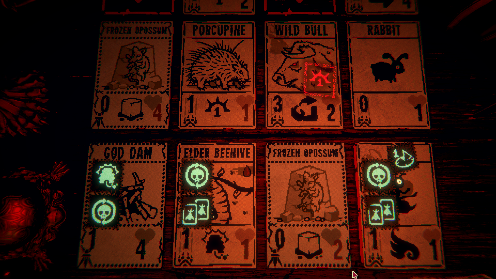

Lab 2 - Hello World
Hi! My name is Lyllian Timothee. I am a Film and Digital Media major and a 3rd year transfer. In my spare time I like to draw, animate, listen to music, and watch a plethora of shows and videos. Most recently, I finished watching the shows Dexter and The Boys. Here's a picture of Inscryption:

Hello my name is Oliver Winkler I am a 4th year art major I am focusing on bronze casting and photography. I am part of the UCSC men rugby team. I like do to ocean related activities like boogie boarding, surfing, and bodysurfing. I am also interested in languages. I am fluent in Spanish and am currently studying Japanese. In my spare time I enjoy reading manga.